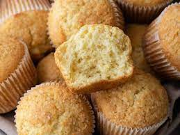

Muffin
A muffin az egyik legegyszerűbb édes vagy sós tésztájú finomság. Ez az egyszerű finomság szinte minden összejövetelen az asztalra kerül. Lehet belőle édes, mutatós desszert vagy sós napindító is. Mivel a tésztája keverem-kavarom alapon áll össze, gyerekek bevonásával is össze lehet dobni.

Hozzávalók
- 25 dkg liszt
- 0.5 tk só
- 3 tk sütőpor
- 2.5 dl tej
- 1 db tojás
- 10 dkg cukor
- 0.6 dl olaj
- vaj (a formához)
Elkészítés
- Előmelegítjük a sütőt 200 fokra. Egy tálba szitáljuk a lisztet, a sót és a sütőport. Egy másik tálban elkeverjük a tejet, a tojást és a cukrot, majd utána hozzáadjuk az olajat, és ezt is elkeverjük.
- A nedves hozzávalókat a száraz hozzávalókhoz öntjük, és addig keverjük, amíg össze nem áll sűrű tésztává. Nem kell kidolgozni, nem kell vele foglalkozni, ha csomós a tészta. Ettől egyszerű és tökéletes a muffin, hogy sütés közben majd “helyrejön”.
- Tetszés szerint csokit és gyümölcsöt adunk hozzá, majd lazán elkeverjük. (Kb. 20 dkg-ot vesz fel ezekből ez a mennyiségű tészta.)
- Kivajazzuk egy muffin sütőforma tetejét – erre azért van szükség, hogy a megemelkedő muffinokat könnyen ki tudjuk venni. Beletesszük a formába a muffin papírokat.
- A tésztát a formákba kanalazzuk. Az amerkaiak ehhez általában fagyiskanalat használnak – egy muffin kb. egy kanál. Ha nincs ilyen, akkor sima evőkanál is jó, abból kb. 3 púpozott. Elosztjuk a tésztát egyenletesen, kb. a forma 3/4-ig fog érni.
- Sütőbe tesszük és kb. 25 perc alatt készre sütjük. Ha kész, kivesszük és hagyjuk kihűlni.